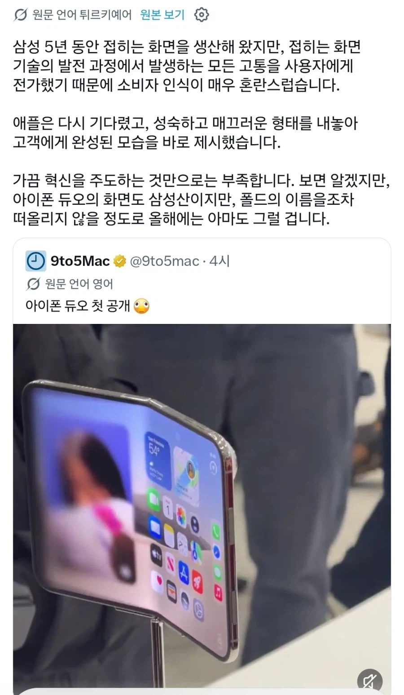
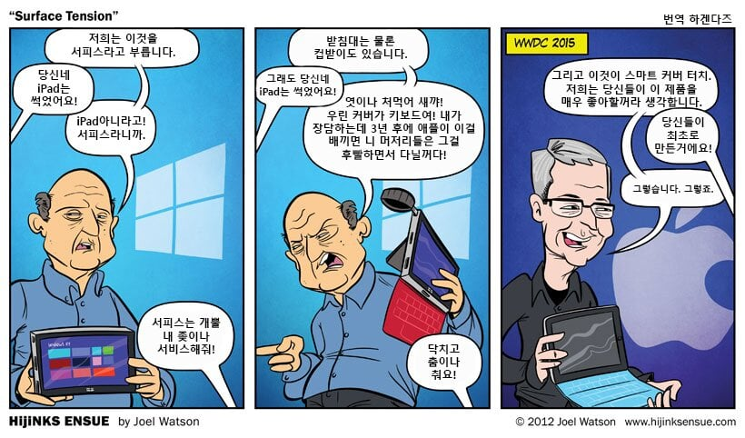

앱등이


앱등이
사람들이 그냥 다 병신이라서 애플이 하면 '와~~~~'하면서 빨아주는걸까?
이번에 듀오 접히는 화면도 사실 별거 아니잖아
그걸 존나 세련되게 만드는게 기술이고 능력이지 뭐
걍 애플이 머리를 잘쓰는거지
혁신이라기 보다는 다른 곳에서 트라이얼에러하는거 보고 거기서 개선점만 찾아서 발전하는거같음
맞는 말인데 앱등이들은 그걸 혁신이라고 해서 문제지ㅋㅋㅋㅋ
근대 그게 옛날 이미지지
진짜 극성 틀딱들빼곤 그렇게 안나댐
앱등이들은 아주 종교여 종교ㅋㅋㅋ
여기 댓글만 봐도 욕 아니면 감성은 있네 세련됐네 정도인데 혁신이 어디..?
열심히 하는게 중요한게 아니다.. 잘해야데
지가만든것도 아닌데 왤케 전화기 하나에 감정을 이입하는지
그게 자기들이 산것중에 몇손가락에 꼽히는 비싼거라서 그런가봄
춤은 춰야되지않냐?
이건맞다 춤을 춰라
괜히 애플빠가 아니네 진짜 애플처럼 말하는데?
아이폰 폴드가 감성적으로 좋다는 건 알겠다만 ㅅㅂ 기술 성숙도는 도찐개찐인데 ㅋㅋㅋㅋ
갬성점수 아닙니까
애플이 어느정도 지켜보면서 시장도 성장하고 부품들도 퀄리티있게 올라왔을 때 시장진입하는 건 똑똑하긴 한데, 삼성이 계속 폴드 내놓으면서 기술발전시켜서 그 과실을 앱등이들도 따먹으멱서 무슨 그간 기술발전의 고통을 소비자에게 전가했다고 개소리하는건 꼽네ㅋㅋ
기술발전의 고통을 빨아먹은건 그동안 구경하다가 이제서야 진입한 애플이지 무슨 ㅋㅋㅋ
요즘엔 걍 애플개쩐다! 이런사람들보단
갤럭시 쓰기엔 너무많이왔어.. 이런사람들이 많아서 그냥 그런가보다함
나이좀 있는 사람은 이게 대부분이긴 하지
폰 태블릿 pc 워치 등 갖춰놓은 생태계가 다 애플이라
이게 나다
오포는 뭔죄 ㅋ
???: 통쾌했어요
갤럭시 아이폰 다 써봤고 지금은 아이폰17 쓰는중
솔직히 듀오 포함 폴드가 왜 필요한지 진짜 모르겠음. 기술력 좋고 이쁜건 알겠는데, 무겁고 주름에다 깨지면 AS 개 비싸고.. 지금까지 사고 싶단 생각 1도 안 들던데
플립은 접으면 바형 반토막나서 주머니 넣고 다니긴 편했음 몇번 떨구면 개작살 나서 수리비 ㅈㄴ 나와서 바꾸긴 했지만...
그건 니생각이고
ㅇㅇ 나는 사고 싶지 않은 생각이라고 써놨음
무겁고 -> 폴드 7부터는 바형보다 가벼워짐
주름 -> 신경안쓰는사람이 대부분
일단 이새낀 서피스는 안써본게 확실함
서피스야말로 고통을 전가했지 소비자한테ㅋㅋㅋㅋ
진짜 QC부터 각종 버그에 아직도 몸서리가쳐진다
난 접히는 폰 쓸 바에는 폰 + 태블릿 쓰는걸 선호하지만 이번 아이폰 듀오의 접고 펴는 동작 사이의 감성은 진짜 지린다 생각함
우리가 하면 혁신 남이하면 실험
비전프로때 절정이었음
기술이 성숙하는 과정의 고통을 소비자에게 전가 ㅋㅋㅋ
그래서 혁신의 비전프로 어디감?
서피스는 개뿔 내 좆이나 서비스해줰ㅋㅋㅋㅋ
넘에꺼 사다쓰면서 뭔 말이 저리 많냐ㅋㅋㅋ
아 근데 열때 투명에서 쫘아악 선명해지는 연출은 ㄹㅇ 디테일 끝내주더라
혁신이다 뭐다 할꺼면 폴더 말고 다른 기술을 가져오면 좋았을텐데
몇년을 질질끌어놓고 결국 똑같이 베껴만들고 틀린그림 찾기 수준으로 비교만하니 좀 짜침
주어를 현대로
기술을 자율주행으로 바꿔보자
근데 저거도 쓰다보면 중간에 선 생기는거 거의 100% 아님?
ㅋㅋㅋ 삼성이 디스플레이 안팔면 얘넨 이제 차선책도없을텐데
폴드 9종류 만들동안 안한거 보면
그냥 하기 싫었던거지 뭘